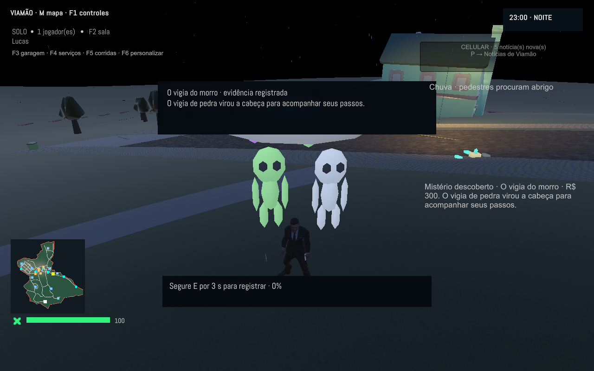
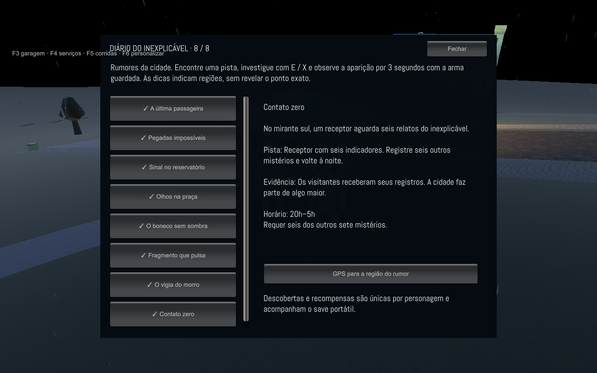
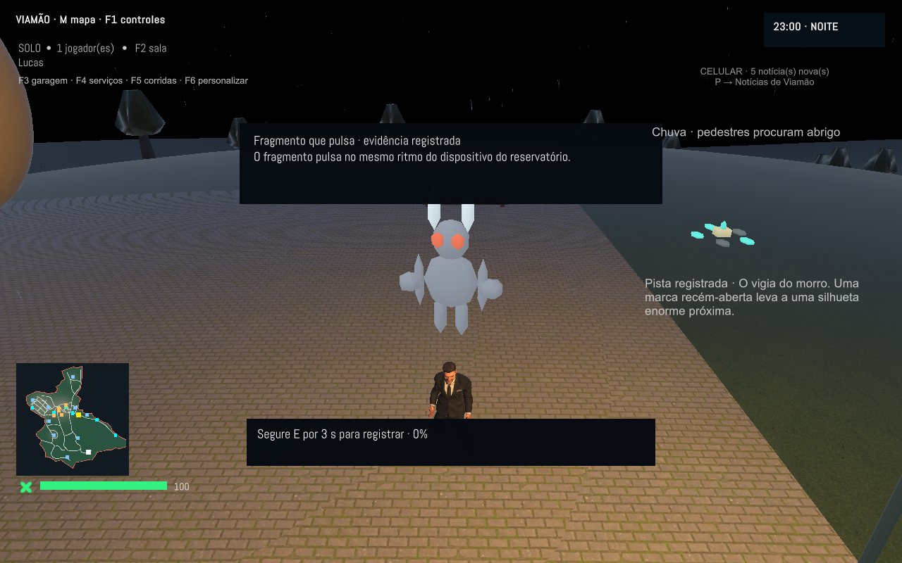
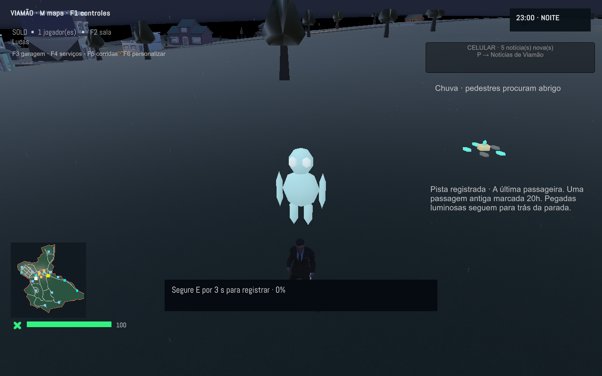
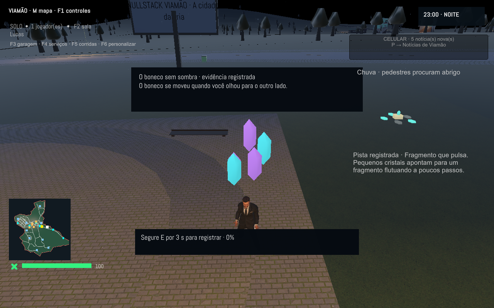
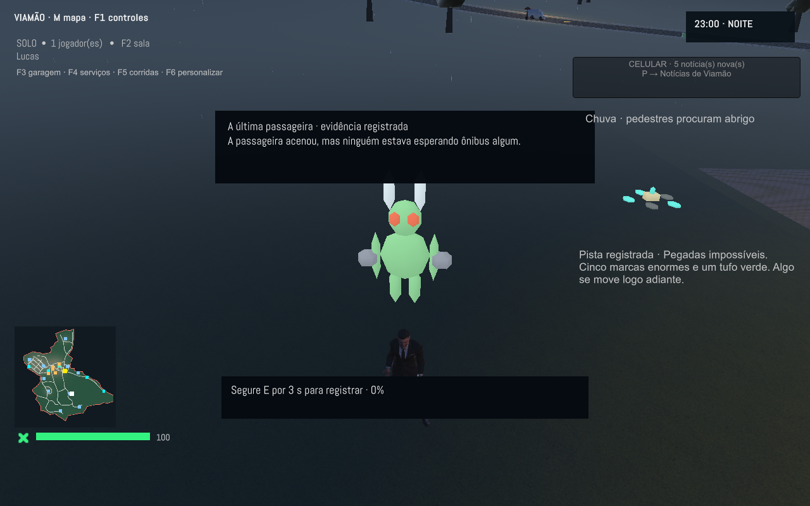
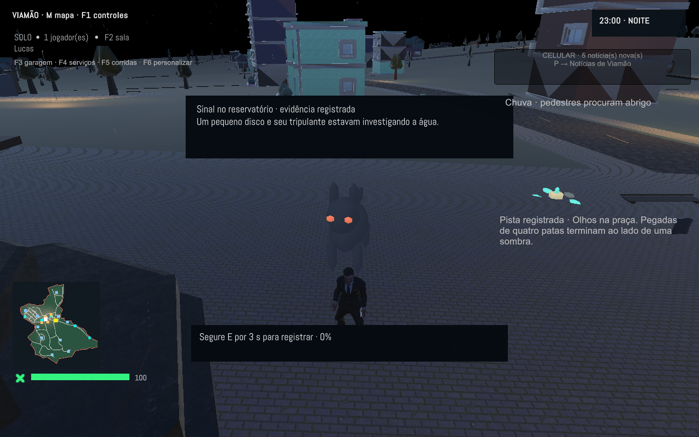
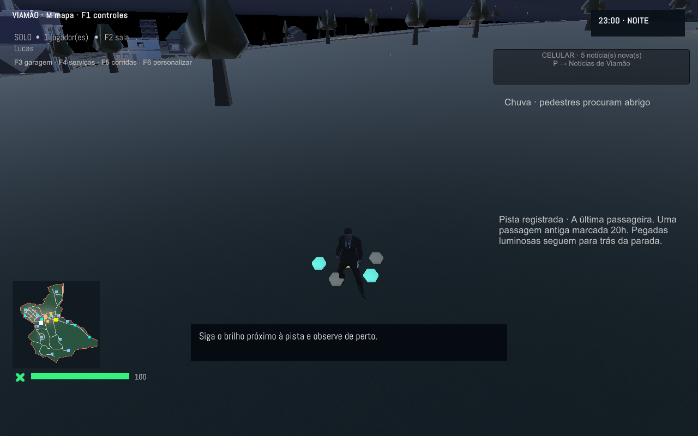
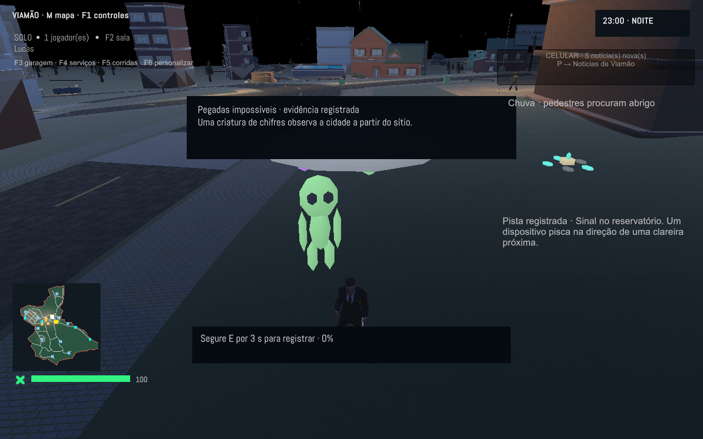
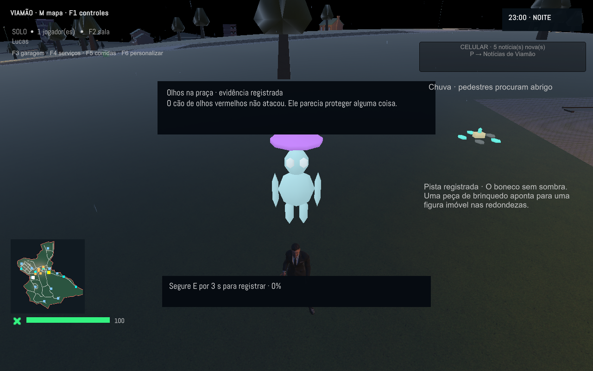

Segredos da cidade · 1.27
Capturas reais dos oito mistérios e do diário. Contém spoilers das descobertas.

Segredos · contact-zero
Segredos · diario-completo
Segredos · hill-watcher
Segredos · last-passenger
Segredos · living-fragment
Segredos · orchard-beast
Segredos · park-eyes
Segredos · pista-terminal
Segredos · reservoir-signal
Segredos · shadowless